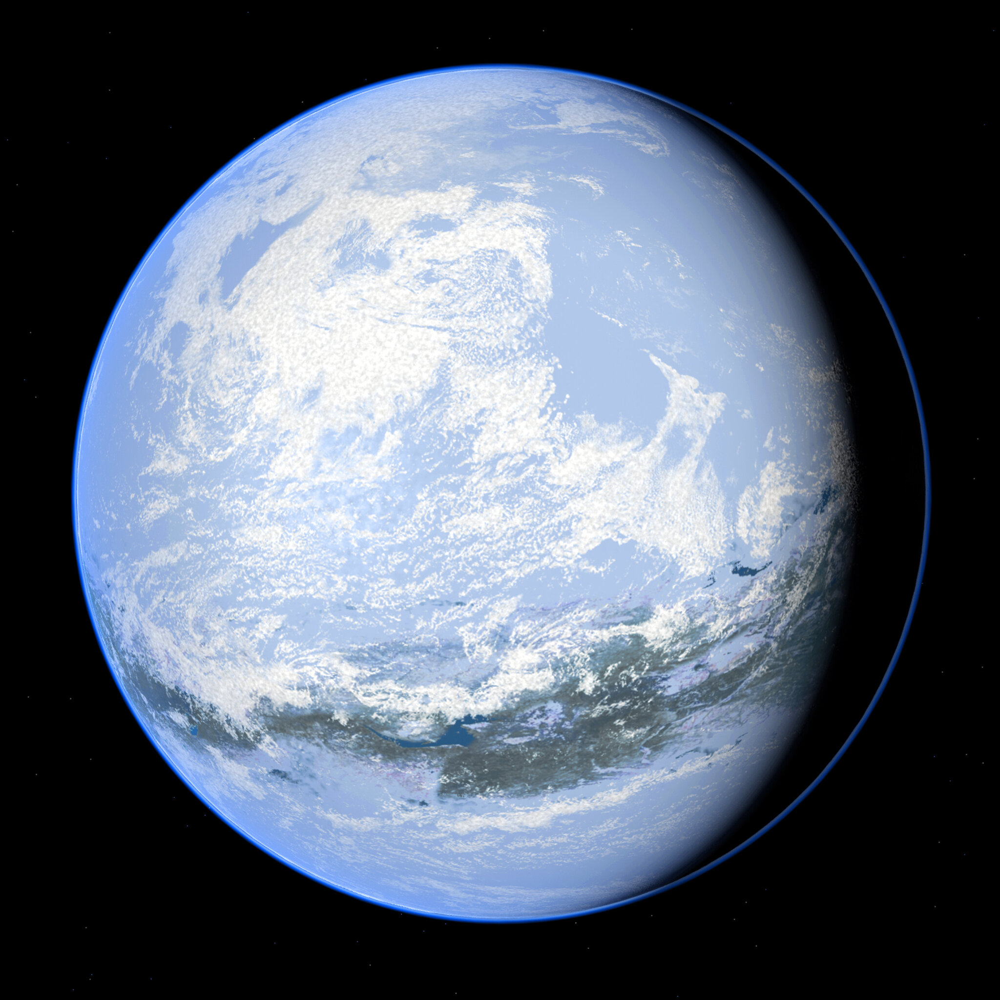

Terra (tehr-RAH), also known as PEO3 (Post-Esquecida Object III), was a hypothetical interstellar planet that collided with primordial Terraferma after being violently ejected from its system. It is one of the possible explanations for the formation of Lua Major. Terra is hypothesized to have travelled from a one-star system after the explosion of its sun and it might be the origins of the Disco Dourado, a mysterious, undeciphered object that some scientists speculate is proof that Terra harbored life.